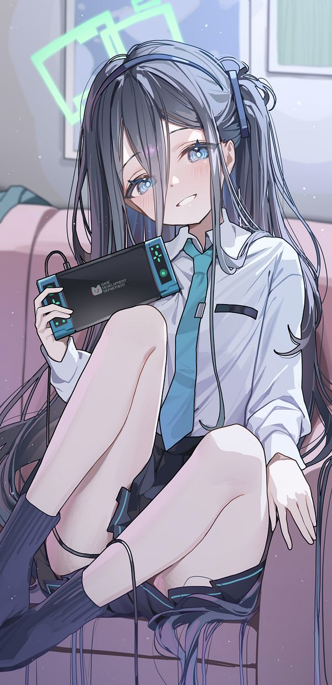

ATACTICAL NETWORK ASSISTARISU 01
READY
LINK ASSIST · PROFILE SETUP
Чистый сигнал.
Твой сценарий.
Настрой профиль и точку входа — без лишних экранов и сложных меню.
ВЫБРАННЫЙ ПРОФИЛЬАвто · баланс
AR-LINK // 01